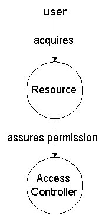
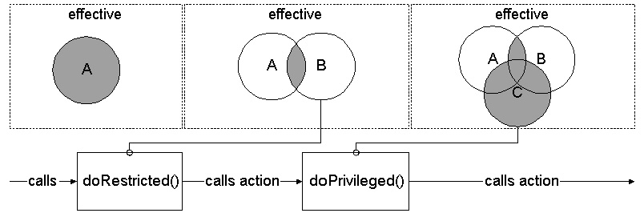
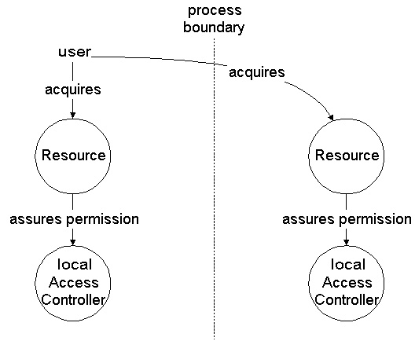

|
In general, security concerns the following four topics [CORBA Security Specification]:
Confidentiality: Information is disclosed only to users authorized to
access it. Integrity: Information is modified only by users who have the
right, only in authorized ways, and is transferred only between intended
users in intended ways. Accountability: Users are accountable for their
security-relevant actions. Availability: Use of the system cannot be randomly or
maliciously denied to authorized users.
Among this very common understanding of security, there are two distinct topics when users want to access or modify resources, or execute a program:
Authentification: The process of validating a subject to ensure that the subject (for example John Doe) is who or what it claims to be.
Authorization: The process of granting permission to access data or execute functionality.
A subject (for example the user who started an application or demands access on
resources accessible via a WWW front end) has to be authenticated to an
information system. Often, this first step associates the subject with a set of
credentials, such as, user attributes, permissions, or different principals.
A subject may be any entity, for example, a person or service. Once
authenticated, a subject is populated with associated identities or principals.
A subject may have many principals. For example, a person may have a name
principal ("John Doe") and a social security number principal ("123-45-6789"),
which distinguish it from other subjects.
Authorization has to be done any time the user demands access to sensitive
data or wants to execute sensitive code. Authorization is hence of a
programmatic nature and is implemented by the specific service that is handling
the demand (explicitly checked by base service, but implicitly checked from
service users' perspective). A common approach of authorization is handled by
access control lists (ACL), that is, sets of permissions (positive) or denials
(negative).

The next sections are about the UNO security API, covering authorization exclusively. Authorization is a primary goal because it affects most of the client code, such as, doing permission checks.
It is assumed that users have been authenticated previously using some
mechanism.
There was no new API defined that abstracted from a specific authentication mechanism, such as the Java Authentication and Authorization framework (JAAS).
Although there is no defined API, you can find some draft interfaces and services in the udkapi cvs tree of the com.sun.star.security.auth package.
|
|
The UNO API is closely related to the Java authorization API. Permission
semantics have been adopted.
For details about java permissions, have a look at
Permissions in the Java 2 SDK.
There is only a difference when coming to dynamic restrictions which are
implicitly handled by the Java AccessController (ac). The Java ac implicitly
checks permissions related to a PermissionDomain. A PermissionsDomain includes
a set of permissions related to a set of classes. Java can manage this, but
this feature is not practically adaptable for compiled machine code.
As a solution, these dynamic restrictions can be set explicitly using the
UNO ac interface. This will install thread/task local restrictions to be used
upon permission checks.
API Access
Implementing programmatic security (client code), there is an ac singleton object in the component context given to every component. The name of the object is
/singletons/com.sun.star.security.theAccessController
|
This object mainly exports the com.sun.star.security.XAccessController interface which has the following IDL definition:
module com { module sun { module star { module security {
interface XAccessController : com::sun::star::uno::XInterface
{
void checkPermission(
[in] any perm )
raises (AccessControlException);
any doRestricted(
[in] XAction action,
[in] XAccessControlContext restriction )
raises (com::sun::star::uno::Exception);
any doPrivileged(
[in] XAction action,
[in] XAccessControlContext restriction )
raises (com::sun::star::uno::Exception);
XAccessControlContext getContext();
};
}; }; }; };
|
Checking Permissions
The first method is commonly called by security-related services which need to check if an action is permitted.
The actual permission takes the security policy, currently in effect, into account.
In general, the security policy in effect has a dynamic and static part.
The dynamic part uses restrictions modified by doRestricted() and doPrivileged() calls, while the static part takes user credentials into account (commonly persistent data).
Currently, four different permission types are defined in IDL and implemented in the UDK ac (module stoc/source/security):
com.sun.star.io.FilePermission:
module com { module sun { module star { module io {
struct FilePermission
{
string URL;
string Actions;
};
}; }; }; };
|
This permission represents access to a file or directory.
A FilePermission consists of a file url and a set of actions valid for that url.
The path of the file url that ends in "/*" indicates all the files and
directories contained in that directory. A path that ends with "/-"
indicates (recursively) all files and subdirectories contained in that
directory. A file url string consisting of the special token "<<ALL FILES>>"
matches any file.
Note: A file url string consisting of a single "*" indicates all the files
in the current directory, while a string consisting of a single "-" indicates
all the files in the current directory and (recursively) all files and
subdirectories contained in the current directory.
The actions to be granted are a list of one or more comma-separated keywords.
The possible keywords are "read", "write",
"execute", and "delete".
Their meaning is defined as follows:
read -- read permissionwrite -- write permissionexecute -- execute permissiondelete -- delete permission
The actions string is processed case-insensitive.
Attention:
Be careful when granting FilePermissions. Think about the implications of
granting read and especially write access to various files and directories.
The "<<ALL FILES>>" permission with write action is especially dangerous.
This grants permission to write to the entire file system.
com.sun.star.connection.SocketPermission:
module com { module sun { module star { module connection {
struct SocketPermission
{
string Host;
string Actions;
};
}; }; }; };
|
This permission represents access to a network via sockets.
A SocketPermission consists of a host specification and a set of actions
specifying ways to connect to that host. The host is specified as
host = (hostname | IPaddress)[:portrange]
portrange = portnumber | -portnumber | portnumber-[portnumber]
The host is expressed as a DNS name, as a numerical IP address, or as a
"localhost" (for the local machine). The wildcard "*"
may be included once
in a DNS name host specification. If it is included, it must be in the
leftmost position, as in "*.sun.com".
The port or portrange is optional. A port specification of the form "N-",
where N is a port number, signifies all ports numbered N and above,
while a specification of the form "-N" indicates all ports numbered
N and below.
The possible ways to connect to the host are
acceptconnectlistenresolve
The "listen" action is only meaningful when used with "localhost".
The "resolve" (resolve host/ip name service lookups) action is implied when any of the other actions are present.
As an example of the creation and meaning of SocketPermissions, note that if
the following permission:
SocketPermission("foo.bar.com:7777", "connect,accept");
is granted, it allows to connect to port 7777 on foo.bar.com, and to
accept connections on that port.
Similarly, if the following permission:
SocketPermission("localhost:1024-", "accept,connect,listen");
is granted, it allows that code to accept connections on, connect to, or listen
on any port between 1024 and 65535 on the local host.
Attention:
Granting code permission to accept or make connections to remote hosts may be
dangerous because malevolent code can then more easily transfer and share
confidential data among parties who may not, otherwise, have access to the data.
com.sun.star.security.RuntimePermission:
module com { module sun { module star { module security {
struct RuntimePermission
{
string Name;
};
}; }; }; };
|
This permission grants runtime access to some named functionality. A RuntimePermission contains
a name (also referred to as a target name) but no actions list;
you either have the named permission or you don't.
com.sun.star.security.AllPermission:
module com { module sun { module star { module security {
struct AllPermission
{
};
}; }; }; };
|
The AllPermission is a permission that implies all other permissions.
Attention:
Granting AllPermission should be done with extreme care, as it implies all
other permissions. Thus, it grants code the ability to run with security
disabled. Extreme caution should be taken before granting such a
permission to code. This permission should be used only during testing,
or in extremely rare cases where an application is completely trusted and
adding the necessary permissions to the policy is prohibitively cumbersome.
When access is denied upon calling checkPermission(), an
AccessControlException is thrown. An
AccessControlException signals a security violation.
The AccessControlException is derived from
SecurityException which is derived from
RuntimeException and thus can be thrown upon any call on UNO
interfaces, except for calls on XInterface::acquire() and
XInterface::release().
module com { module sun { module star { module uno {
exception SecurityException : com::sun::star::uno::RuntimeException
{
};
}; }; }; };
module com { module sun { module star { module security {
exception AccessControlException : com::sun::star::uno::SecurityException
{
any LackingPermission;
};
}; }; }; };
|
Static Restrictions
A restriction is defined by a set of permissions. It has to be assured that a demanded permission is implied by this set of permissions.
Static restrictions are defined by a (commonly persistent) set of permissions granted to a user. This has been done by some admin frontend in advance. The effective set of permissions is provided by the
Policy service.
There is a singleton object installed into the initial component context from which an ac implementation reads:
/singletons/com.sun.star.security.thePolicy
|
The service supports the interface
XPolicy
and reads out of some storage:
module com { module sun { module star { module security {
interface XPolicy : com::sun::star::uno::XInterface
{
sequence< any > getPermissions(
[in] string userId );
sequence< any > getDefaultPermissions();
void refresh();
};
service Policy
{
interface XPolicy;
};
}; }; }; };
|
Implementing the XPolicy interface, it is important to separate
default permissions from user permissions. That is, the ac implementation has
to combine both to get the effective set of permissions. Providing these
permissions separately, the ac implementation has the opportunity to optimize
permission sets, that is, it only needs to read (and convert) the default
permissions once, for every user.
Dynamic Restrictions
Dynamic restrictions apply to the doPrivileged() and doRestricted() calls of the XAccessController interface.
These calls will directly modify a property of the
current context which is called
access-control.restriction
|
This property is of type XAccessControlContext and taken into
account additionally to the static permissions granted to the calling user.
The XAccessControlContext has only one method:
module com { module sun { module star { module security {
interface XAccessControlContext : com::sun::star::uno::XInterface
{
void checkPermission(
[in] any perm )
raises (AccessControlException);
};
}; }; }; };
|
Users may implement this interface themselves to restrict or to get a snapshot of the currently effective security by calling XAccessController::getContext(). This has to be done when raising new threads. A child thread has to inherit an initial restriction context from its parent at the time of creation.
When calling XAccessController::doRestricted() the ac
implementation combines a previous restriction with the given one, thus the
intersection of permissions of both contexts becomes effective. It then
installs this new restriction into the current context and calls the specified
action. In essence, when doing subsequent doRestricted() calls,
you chain up several restrictions over several stack layers.
When calling XAccessController::doPrivileged(), the ac
implementation adds the given set of permission (defined by the ac context),
installing an extended restriction. If you pass a null-ref to
doPrivileged(), then all permissions are implied (no dynamic
restriction). This feature may be sensible for basic service implementations
which need privileges in a well-defined manner, a.k.a., they know what they
do.

AccessController Switches
The ac can be run in several modes, thus influencing its runtime behavior. When instantiating the ac service, it uses the component context' property
/services/com.sun.star.security.AccessController/mode
|
Currently, there are five modes:
"on"
This (default) mode turns dynamic and static permission checks on.
Dynamic restrictions are performed evaluating the current context's
access-control.restriction property. Static
permissions are checked against the calling user's permissions
provided by the policy service. The current user id is determined
using the current context's property
access-control.user-credentials.id. If neither the
dynamic restriction nor the effective user's permissions grant a
demanded permission, then an AccessControlException is
thrown."single-user"
This mode turns dynamic and static permission checks on. Dynamic
restrictions are performed evaluating the current context's
access-control.restriction property. Static
permissions are checked against the user's permissions provided by
the policy service. The user id is determined using the component
context's property
/services/com.sun.star.security.AccessController/single-user-id.
If neither the dynamic restriction nor the effective user's
permissions grant a demanded permission, then an
AccessControlException is thrown.
"single-default-user"
This mode turns dynamic and static permission checks on. Dynamic
restrictions are performed evaluating the current context's
access-control.restriction property. Static
permissions are checked against the default permissions provided by
the policy service. If neither the dynamic restriction nor the
default permission grant a demanded permission, then an
AccessControlException is thrown.
"dynamic-only"
This mode turns dynamic permission checks on, exclusively. This is
useful, if you cannot determine any specific user and don't want to
build up a dummy policy granting default permissions.
|
|
Untrusted code should, in general, run in a sandbox, that is, a restricted environment.
Untrusted Native Code
One cannot restrict native code modifying the current context, poke memory, thus influencing the security policy. I think this is not a goal.
Untrusted Scripted Code
Sandboxed script code, for example, a basic script, has to be restricted in the
way that the underlying engine disallows modifying the following current
context's access-control properties, i.e., all of:
as well as disallowing a call on the ac's doPrivileged().
These actions are security violations and have to be signalled via a
SecurityException.
In addition, it has to be ensured that the script cannot raise components
exchanging the ac of the component context. Therefore, the script engine has
to proxy the service manager ensuring the ac property
/singletons/com.sun.star.security.theAccessController
|
is original, by doing security checks when
XSingleComponentFactory::createInstanceWithContext() or
XSingleComponentFactory::createInstanceWithArgumentsAndContext()
is called.
Untrusted Java Code
In general, the same applies for Java as for scripts. In addition, the UNO policy has to be plugged under the Java AccessController restricting calls to the Java API.
For example, imagine that the untrusted Java code opens a file using the Java core API.
The Java AccessController has to control this access relying on its Java policy in effect.
Another problem with integrating the Java and C++/UNO access controllers are
dynamic restrictions, which is not yet solved.
Untrusted Inter-Process Code
A remote user (inter-process user) is assumed to be authenticated when connected.
The server code must ensure separating different users; it is not necessary that the client code needs to be trusted in terms of dynamic restrictions as demanded for untrusted scripted code.
But it has to be ensured that the server-side ac implementation is always used when restricting server-side access, such as when permission checks have to be performed process-locally.

|
|
Upon bootstrapping the UNO core system getting an initial
component context, the ac implementation of stoc/source/security (sec.dll/ libsec.so) is installed as a singleton. This is most commonly done using some of cppuhelper's bootstrapping function, for example:
defaultBootstrap_InitialComponentContext().
You can specify some bootstrap variables mapping directly to the above mentioned AccessController mode:
UNO_AC=("on" | "off" | "dynamic-only" | "single-user" |
"single-default-user")
The general ac mode
UNO_AC_SERVICE=service-name
[optional]
This overrides ac singleton service name to be usedUNO_AC_SINGLEUSER=(UserId|<nothing>)
[optional]
The initial context runs with this user id or with default policy.
In this case, the UNO_AC has to be set to
"single-user" or "single-default-user".
UNO_AC_USERCACHE_SIZE=n
This value maps to the component context entry
/implementations/com.sun.star.security.comp.stoc.AccessController/user-cache-size,
denoting the number of user permission sets to be cached before
calling the policy (lru cache).
UNO_AC_FILEPOLICY=file-url
This value maps to the component context entry
/implementations/com.sun.star.security.comp.stoc.FilePolicy/file-name
denoting the file URL to read the user permission sets from. The
file policy service implementation of
stoc/source/security is installed.
Recurring Calls
When implementing an ac, there is a specific issue concerning
bootstrapping of the ac singleton.
The ac is (to be) used in every service implementation code and has to cope with the situation that it is called recursively.
This can occur when the ac implementation initially raises the policy singleton object which checks permissions.
A (possible) solution for this is to let recurring
checkPermission() pass unchecked.
This assumes that one knows implementation details of the underlying policy,
but one generally don't feel well allowing unchecked permission grants, even
for a short time.
A better (safer) solution for this problem is that you shift the time a
permission is checked.
Any recurring checkPermission() call will be passed unchecked, but the permission and user context is saved for later execution (when everything is initialized).
For a clearer distinction that an access violation occurred during bootstrapping of the ac, this violation should not be notified using an AccessControlException, but a different RuntimeException, such as, DeploymentException (yet to be specified) .
The only drawback of this solution is that an error notification is not sent as
soon as possible.
Marking a stack, one commonly uses thread-local storage (tls).
When calling an unknown implementation (e.g., the policy singleton) a tls slot has to be marked, thus one can recognize a recursive call.
When recognizing a recursive call, the demanded permission and calling user have to be queued, performing the check later and the call is passed.
Performance Considerations
The ac implementation uses caching of user permission sets
(/services/com.sun.star.security.AccessController/cache-size)
for the reason that a permission description has to be parsed (e.g.,
extracting port numbers).
Parsing a permission is performed only once, so any ongoing permission check (when the chain of granted permissions is read) can be done once, then using the parsed permission description for checking.
File Policy Implementation
The file policy implementation of stoc/source/security
(implementation name com.sun.star.comp.stoc.FilePolicy is a
simple policy reading from policy files.
The structure of those files is very similar to those of
Java policy files, e.g.:
grant user "dbo" {
permission com.sun.star.io.FilePermission
"file:///home/dbo/-", "read,write,execute,delete";
};
grant user "jbu" {
permission com.sun.star.io.FilePermission
"file:///home/jbu/-", "read,write,execute,delete";
};
// permission granted to everyone
grant {
permission com.sun.star.io.FilePermission
"file:///tmp/-", "read,write,execute,delete";
};
|
|